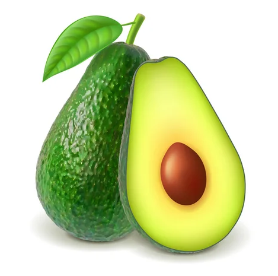

X
COMERCIALIZADORA GLOBAL FRUT S. DE R.L. DE C.V., con domicilio ubicado en Libramiento Oriente, número 5847, Interior 1, Colonia Quirindavara, Código Postal 60190, de la Ciudad de Uruapan, del Estado de Michoacán, país México, y
con correo electrónico pagoaproductores@globalfrut.com.mx y/o roxanac@globalfrut.com.mx , es el responsable del uso y protección de sus datos personales, y al respecto le informamos que se utilizarán sus datos personales
recabados para:
Los datos personales que recabamos de usted, los utilizaremos para las siguientes finalidades que son necesarias para el servicio que solicita:
1. Acreditación de que la actividad económica que se dice tener, sea equiparada
a la que tiene registrada ante el SAT.
2. Que no tenga una opinión de cumplimiento negativa ante el SAT.
3. Que el Régimen al que pertenece ante el SAT coincida con la factura.
4. Realizaciones de pago.
5. Verificación
de las firmas de los contratos.
6. Cotejo de datos generales.
7. Comprobación de la compra de fruta y así evitar el robo de la misma.
Para mayor información acerca del tratamiento y de los derechos que puede hacer
valer, usted puede acceder al aviso de privacidad integral a través de la siguiente liga:
AVISO DE PRIVACIDAD INTEGRAL